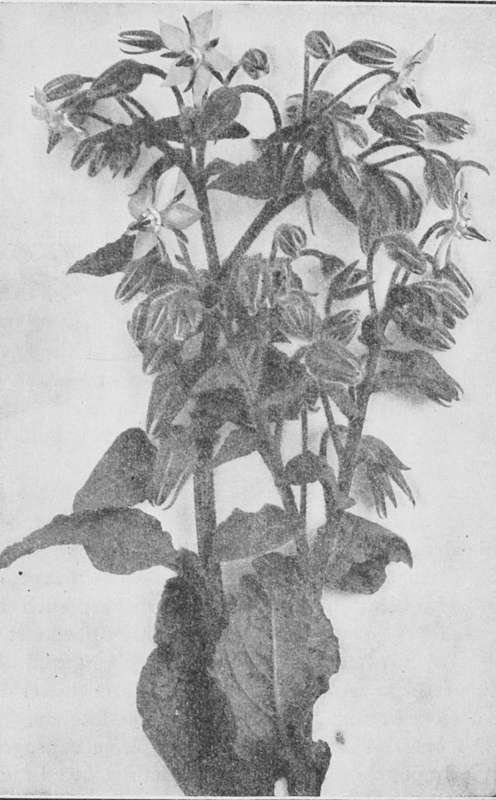

Borage
Description
This section is from the book "Culinary Herbs", by M. G. Kains. Also available from Amazon: Culinary Herbs, Their Cultivation, Harvesting, Curing and Uses.
Borage
Borage (Borago officinalis, Linn.), a coarse, hardy, annual herb of the natural order Boraginaceae. Its popular name, derived from the generic, is supposed by some to have come from a corruption of cor, the heart, and ago, to affect, because of its former use as a cordial or heart-fortifying medicine. Courage is from the same source. The Standard Dictionary, however, points to burrago, rough, and relates it indirectly by cross references to birrus, a thick, coarse woolen cloth worn by the poor during the thirteenth century. The roughness of the full-grown leaves suggests flannel. Whichever derivation be correct, each is interesting as implying qualities, intrinsic or attributed, to the plant.
The specific name indicates its obsolete use in medicine. It is one of the numerous plants which have shaken off the superstitions which a credulous populace wreathed around them. Almost none but the least enlightened people now attribute any medicinal virtues whatever to it.
The plant is said to come originally from Aleppo, but for centuries has been considered a native of Mediterranean Europe and Africa, whence it has become naturalized throughout the world by Europeans, who grew it probably more for medicinal than for culinary purposes. According to Ainslie, it was among the species listed by Peter Martyr as planted on Isabella Island by Columbus's companions. The probability is that it was also brought to America by the colonists during Queen Elizabeth's time. It has been listed in American seedsmen's catalogues since 1806, but the demand has always been small and the extent to which it is cultivated very limited.
Borage, Famous for "Cool Tankard"
Description
Borage is of somewhat spreading habit, branchy, about 20 inches tall. Its oval or oblong-lanceolate leaves and other green parts are covered with whitish, rather sharp, spreading hairs. The flowers, generally blue, sometimes pink, violet-red, or white, are loosely racemed at the extremities of the branches and main stems "The flaming rose glooms swarthy red; The borage gleams more blue; And low white flowers, with starry head, Glimmer the rich dusk through."
-George MacDonald
"Songs of the Summer Night," Part111
The seeds are rather large, oblong, slightly curved, and a ridged and streaked grayish-brown. They retain their vitality for about eight years.
Cultivation
No plant is more easily grown. The seed need only be dropped and covered in any soil, from poor to rich, and the plants will grow like weeds, and even become such if allowed to have sway. Borage seems, however, to prefer rather light, dry soils, waste places and steep banks. Upon such the flavor of the flowers is declared to be superior to that produced upon richer ground, which develops a ranker growth of foliage.
In the garden the seeds are sown about 1/2 inch asunder and in rows 15 inches apart. Shortly after the plants appear they are thinned to stand 3 inches apart, the thinnings being cooked like spinach, or, if small and delicate, they may be made into salads. Two other thinnings may be given for similar purposes as the plants grow, so that at the final thinning the specimens will stand about a foot asunder. Up to this time the ground is kept open and clean by cultivation; afterwards the borage will usually have possession.
Uses
More popular than the use of the foliage as a potherb and a salad is the employment of borage blossoms and the tender upper leaves, in company or not with those of nasturtium, as a garnish or an ornament to salads, and still more as an addition to various cooling drinks. The best known of these beverages is cool tankard, composed of wine, water, lemon juice, sugar and borage flowers. To this "they seem to give additional coolness." They are often used similarly in lemonade, negus, claret-cup and fruit juice drinks.
The plant has possibly a still more important though undeveloped use as a bee forage. It is so easily grown and flowers so freely that it should be popular with apiarists, especially those who own or live near waste land, dry and stony tracts which they could sow to it. For such places it has an advantage over the many weeds which generally dispute possession in that it may be readily controlled by simple cultivation. It generally can hold its own against the plant populace of such places.
Continue to:
- prev: Basil
- Table of Contents
- next: Caraway